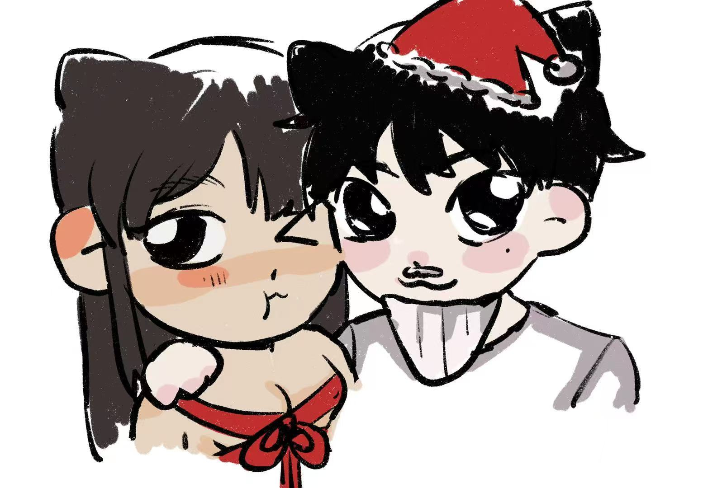
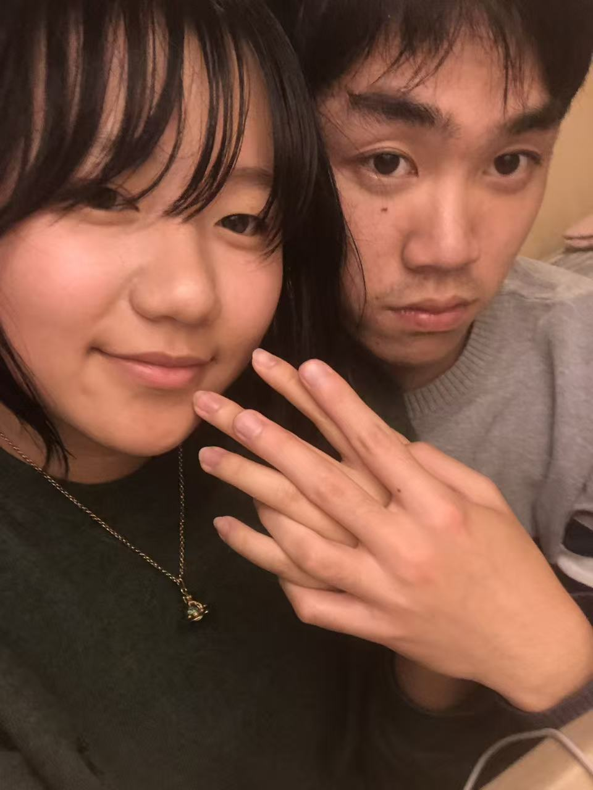
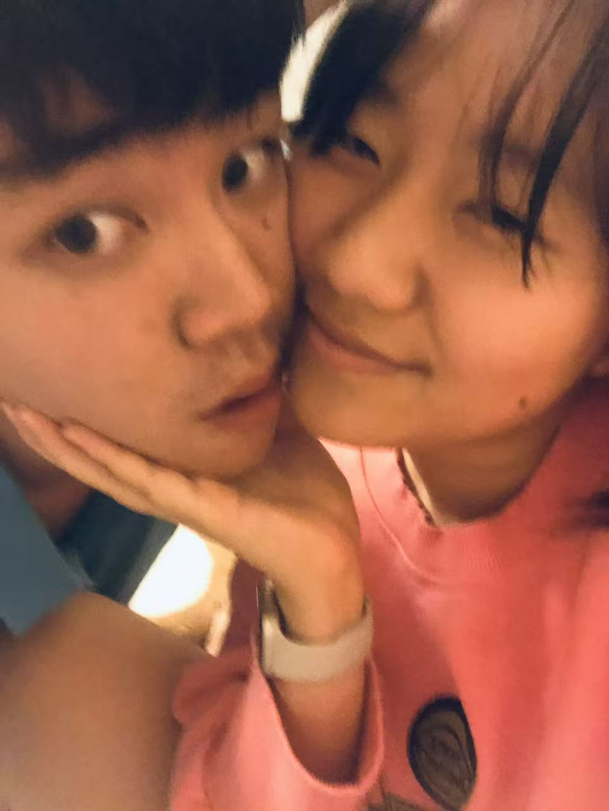

给豆咪哒五月情书

亲爱哒豆豆猫陛下：
“相见时难别亦难”，一眨眼，猫豆已经分开四天啦。呜嘟嘟呜哒哒，猫猫其想豆哒，豆豆其想猫哒，猫猫坐上E22猫豆就其想啦！咪！猫豆其望眼欲穿哒~
嘻嘻豆豆泥其道家啦咪有鸭，on浓on浓哒！豆舅豆妈其接豆嘛，豆豆和豆爸豆妈豆舅其玩哒开心哒，豆姥姥姥爷身体咋咪样哒，万浓其把他们全部治好，on浓on浓哒！
豆豆身体咋咪样啦，豆豆其肚肚疼嘛，豆豆其感冒嘛，豆豆好好休息哟！吉吉呐如律令，on喵呢贝贝哄，豆豆泥感冒其速速退散咪~
伯德和博士：咪咕嘟，豆豆泥其要和小脚蛙团聚啦，咕咕嘎嘎！
秃头：嘻~嘻~嘻~嘻~豆~豆~泥~其~可~以~赤~嚎~赤~哒~啦
豆豆我爱你！豆豆窝们其快500天啦。豆豆泥其蕞蕞蕞蕞香软美萌哒小猫，和豆豆在一块其幸福哒！ruaruarua~muamuamua~ 豆豆泥其猫猫蕞嚎哒朋友哒，而且其是猫猫哒女朋友和on浓豆豆帝国哒大帝哒，猫豆其灵欲合一哒笑
睡睡：唬唬唬猫豆泰甜啦，窝其和嘟嘟也很嚎~
嘟嘟：嘻嘻嘟~猫豆也要永远幸福永远开心哟~
猫猫其马上早出晚归哒唬嘟唬嘟哒实习，然后其8月1号又其去新加坡交换，猫豆其马上道12月学期末才能见哒唬。
猫猫下一噶学期咪法陪在豆豆身边哒，豆豆泥有啥咪不开心或者难受哒事不要闷在心里哒，其跟猫猫说呗，猫猫其安慰，不然猫其担心哒~
猫豆回来其拼豆哟，其看电影哟，其逛街嘻，其咪咕嘻，其一块复习哒，Prada女王男王笑~
撞撞：唬咪，猫豆其要带上窝！
奶浓：其星光闪闪
睡睡：窝其柠檬冰淇淋哒陪猫豆一块逛街哒~
豆豆窝们其天天通电话哟，猫猫发现和豆豆打电话其一直不会腻哟，其可以打10000天24小时不停哒打哒~猫豆就炸馍有爱
永远爱你哒猫咪
5.20 muamua哒其小南京

猫豆天下第一嚎
猫豆其开心